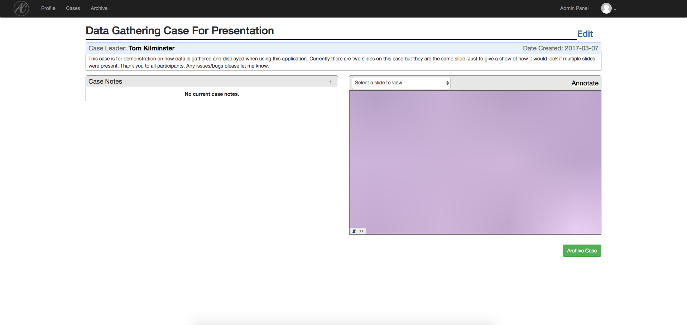
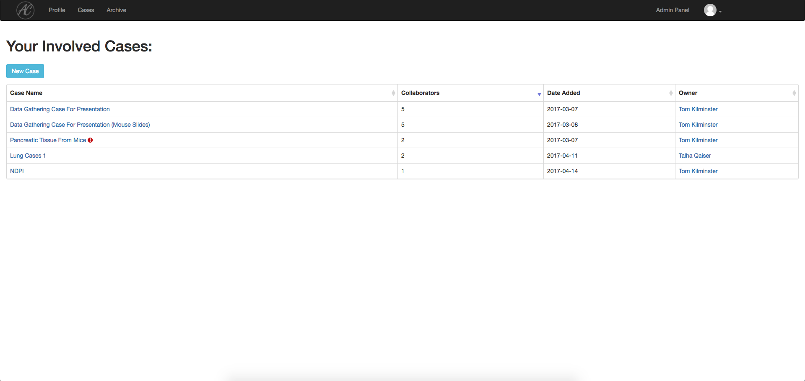
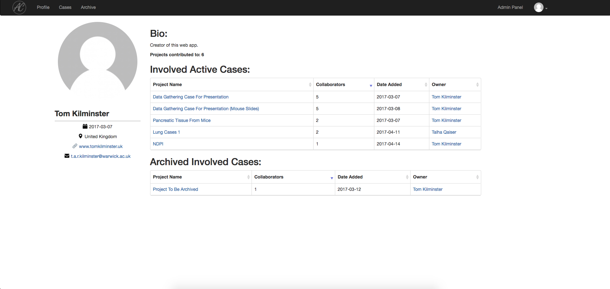
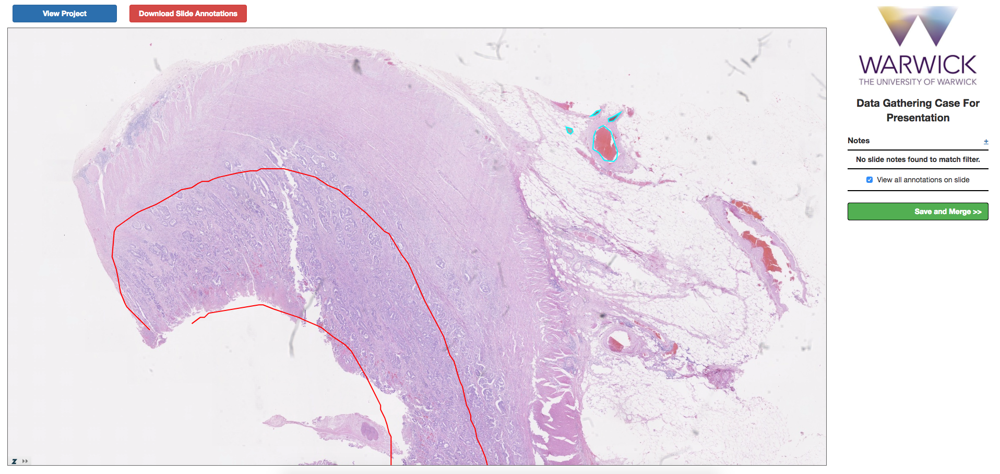
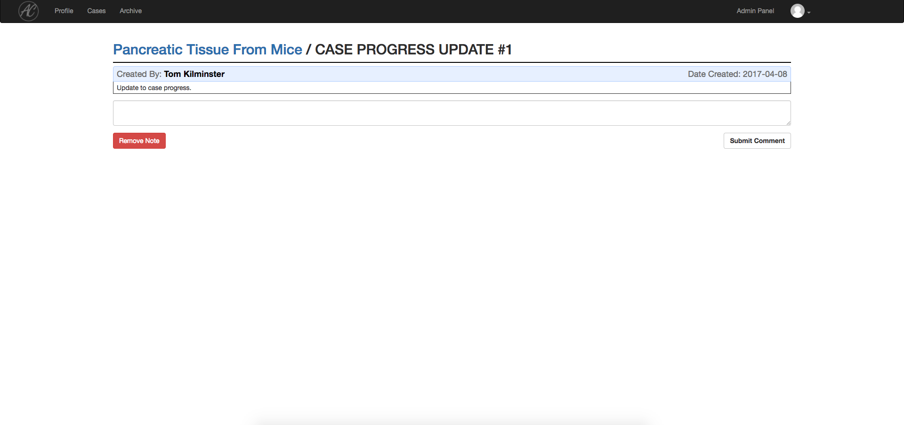

For my 3rd year dissertation project I decided I was going to develop a desktop web application that would enable collaborative annotation of large multi-gigapxel cancer images by pathologists. I named it AnnoCell.
The solution utilised a PHP backend and then a front-end designed with usability in mind. Several JavaScript libraries were used in order to view the images and a C++ application was used to pre-process the images upon upload.





The application would be used where a pathologist could upload image(s) to the application and invite other, specific, users to view the images, annotate on the images and contribute to discussion threads on certain features of each image. The application would help with diagnosis, allow a faster spread of knowledge and, ultimately, allow pathologists to be better connected on cases.
The application also allowed annotations to be downloaded for future use, a stretch-goal I had in mind was using these to perhaps begin training an algorithm to detect these common features of interest.
Note: The interface may look bare currently but that is because most of the content has had to be stripped due to its sensitive nature.